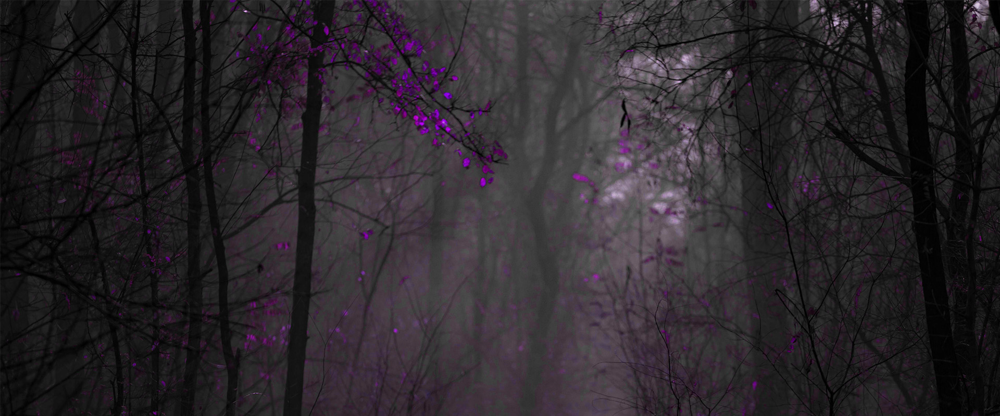

Popular
Houska Castle, located in the Czech Republic, is famous for its paranormal history and the legends that surround it.
Built in the 13th century, it is said to have been constructed over a gateway to hell, from which dark forces emerge.
Several visitors claim to have witnessed strange phenomena, such as shadows, noises, and inexplicable sensations.
Its mysterious atmosphere and Gothic architecture contribute to its reputation as one of the most haunted places in Europe.
Today, it continues to attract tourists and curious visitors seeking supernatural experiences in a historic setting.
Frankenstein Castle, near Darmstadt, Germany, is known for being the inspiration behind Mary Shelley's novel.
Built in the 13th century, this place is surrounded by legends of macabre experiments and ghostly apparitions.
Visitors report seeing strange lights, shadows, and hearing mysterious whispers among its ruins.
The castle’s eerie atmosphere, along with its ghost stories, makes it a popular destination for those seeking to experience history and mystery.
Night events and guided tours offer the chance to explore its secrets and the enduring legends that linger through time.



The Catacombs of Paris form a vast underground labyrinth that holds the remains of millions of people.
Built in the 18th century to relieve the problem of overcrowded cemeteries, these tunnels have become famous for their paranormal legends.
Visitors claim to have felt presences, heard whispers, and seen ghostly figures in the darkness.
The claustrophobic and mysterious atmosphere surrounding the catacombs draws in adventurers and the curious.
Exploring this hidden world beneath Paris means stepping into a story of death, mystery, and unexplained phenomena that continues to fascinate to this day.
Leap Castle, located in Ireland, is considered one of the most haunted castles in the world.
Built in the 15th century, its history is filled with dark episodes, murders, and torture.
It is said to be home to numerous ghosts and unsettling presences.
Visitors have reported apparitions, strange noises, and objects moving on their own.
The heavy atmosphere and surrounding legends make it a popular destination for ghost hunters and tourists.
Its walls hold secrets that continue to inspire mystery and fear, making Leap Castle both a fascinating and terrifying place.